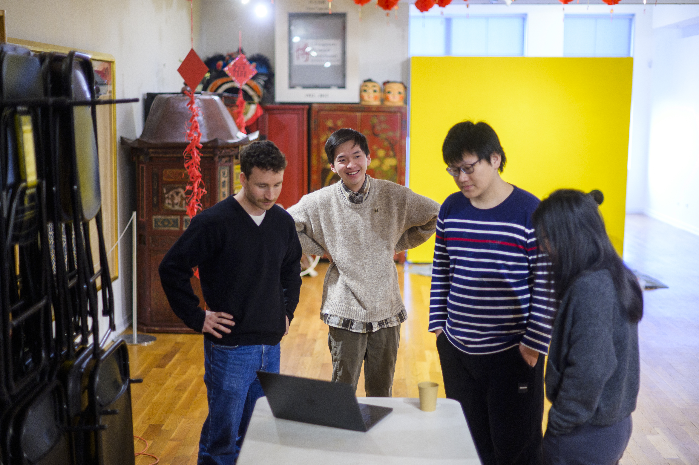

Value & Narrative
First impressions shape the trajectory of a partnership. The starting phase is where
abstract project ideas turn into structured, professional commitments.
By establishing clear team contracts, co-creating agendas, and aligning on project scope early,
you build psychological safety within your team and trust with your client.
Learning how to navigate early ambiguity is one of the most valuable professional
capabilities you will gain at UMSI.

Focus & Objectives
Partner Communication
Draft clear, professional outreach to launch working relationships.
Key Considerations
- Introduce your team and clearly explain the purpose of your outreach.
- Agree on communication methods and expectations early in the partnership.
- Set clear plans for meetings, response methods, and sharing project information.
Helpful Resources
-
Initial Client Email Examples
Plug-and-play email templates for first contact with clients and partners.
-
Ginsberg Center Student-Client Partnership Toolkit
Principles for building reciprocal, respectful community relationships.
First Meetings
Structure productive kickoff meetings that define roles and project bounds.
Key Considerations
- Introduce both teams and clarify the project’s expected outcomes.
- Review the project timeline and confirm primary points of contact.
- Plan the first meeting around key project milestones and deadlines.
Helpful Resources
-
Initial Client Meeting Sample Agenda
Step-by-step structure for running a professional kickoff call.
-
SO-ELL Schedule
Overview of key milestones, deadlines, and submission dates.
Formalizing Agreements
Document team commitments and scope agreements shared by all stakeholders.
Key Considerations
- Define shared project goals and expectations between partners.
- Document each party’s roles, responsibilities, and commitments.
- Agree on communication requirements and the terms of the partnership.
Helpful Resources
-
Student-Client Partnership Guide
Standard guidelines for managing expectations and deliverables.
-
Student Org-ELO Partnership Agreement Template
Formal contract establishing roles between student teams and ELO.